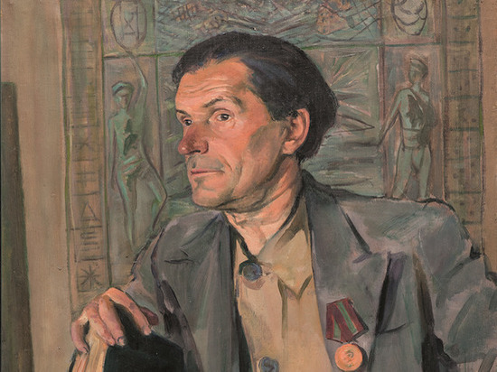

Сергей Калмыков

Толығырақ:
т. 1891, Оренбург, Ресей

Сергей Калмыков, Мистикалық Пейзаж, 1920 ж., Кенепте Май.
Сергей Калмиков-Эксцентрикалық Көреген
Сергей Калмиков (1891-1967) - өмірінің көп бөлігін Қазақстанның Алматы қаласында өткізген ерекше және эксцентрик суретші, ақын және көреген. Оның жұмысы сюрреалистік, мистикалық және жиі футуристік тақырыптарымен ерекшеленеді. Кальмиков көзі тірісінде аз танымал болғанымен, оның ішкі арман мен аян әлемін бейнелейтін, көбінесе қиялды шындықпен үйлестіретін жүздеген туындылар жасады.
Қалмиковтың шығармашылығына Символизм қатты әсер етті және ол жиі жарқын, жерсіз түстермен сурет салып, басқа дүниелік пейзаждар мен көріністерді жасады. Оның өнері батыл эксперименттерімен және перспектива мен түске ерекше көзқарасымен ерекшеленді.